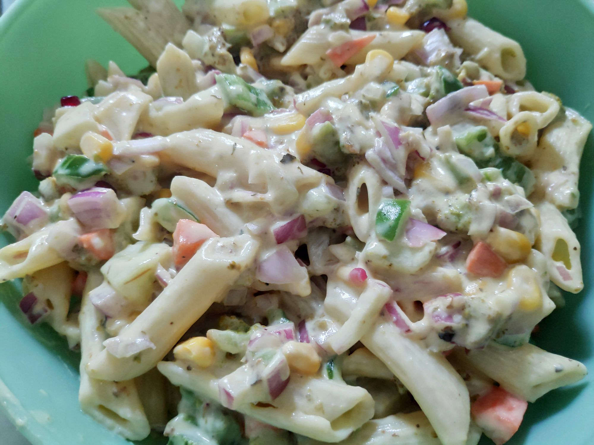

Description
It was one of those I instantly fell in love with, although took me close to an year to upload it up here! Credits go to Mrs Limaye for introducing me to it!
Ingredients
- Honey
- Curd/ Dahi
- Pepper
- Italian Seasoning
- Spring/green Onions
- Mustard
- Mustard Seeds
- Mayonnaise
- Bell Peppers
- baby corn
- Carrot
- Cucumber
- Olive Oil
- Pomegranate
Steps
- Boil pasta(~250g) with some salt and oil to a full cook.(rather than al-dente)
- Strain and set aside the pasta aside to cool down. Sprinkle some olive oil and mix to avoid sticking.
- Finely chop onions(1-2), bell peppers(1-2), corn(3/4 cup), carrot, cucumber.(1)
- Peel and set aside 1/2 a cup pomegranate(seeds).
- Put the pasta in a large mixing bowl.
- Add some curd(1/4 cup), mayo, honey(~3 tbsp) and some mustard.(or powdered seeds)
- Give it a good whirl and toss in the veggies giving it good mix.
- Season
- Adjust the sauces and set aside for at least 15-20 mins in the fridge to cool down.
- Serve Chilled
For additional recipes check out here
Return to top